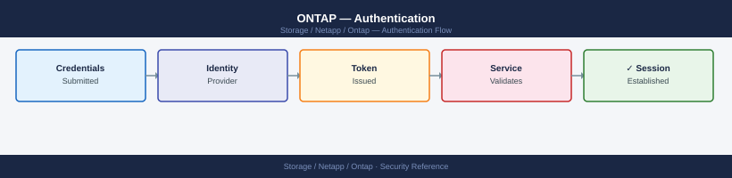

ONTAP — Authentication¶

Before you begin¶
- Access: Storage admin credentials (cluster admin or equivalent)
- Change management: security changes require CAB approval in most environments
- Rollback plan: document current state before any security control change
- Testing: validate in a non-production environment first where possible
Authentication Flow¶
Authentication Methods Summary¶
| Method | Application | Use Case |
|---|---|---|
| Password | SSH, HTTP, ONTAPI | Local accounts; should be avoided for admin in production |
| Public key | SSH | Service accounts and admin access; preferred for SSH |
| Certificate | HTTPS (REST API, ONTAPI) | API automation; mutual TLS |
| Domain (AD) | SSH, HTTP | AD-integrated admin accounts; uses Kerberos |
| SAML | HTTP (System Manager UI) | Browser-based SSO via IdP (ADFS, Okta) |
| NSSWITCH / LDAP | NFS/CIFS data access | UID/GID resolution for NFS; user mapping for CIFS |
Local Accounts¶
ONTAP supports local admin accounts at both the cluster level and the SVM level. Local accounts are independent of Active Directory and are used for break-glass access and service accounts.
Managing Local Accounts¶
# List all login accounts across all SVMs
security login show
# List accounts for a specific SVM
security login show -vserver <svm>
# Show account details including role and last login
security login show -fields username,application,authmethod,role,is-account-locked
# Create a local account with password authentication
security login create \
-username <user> \
-application ssh \
-authentication-method password \
-role admin \
-vserver <cluster-or-svm>
# Create a local account with public key authentication
security login create \
-username svc-monitor \
-application ssh \
-authentication-method publickey \
-role monitor-role \
-vserver <cluster-name>
# Change a user password
security login password -username <user> -vserver <svm>
# Lock an account (disable access without deleting)
security login lock -username <user> -vserver <svm>
# Unlock an account
security login unlock -username <user> -vserver <svm>
# Delete an account
security login delete -username <user> -application ssh -vserver <svm>
cluster1::> security login show
Vserver: cluster1
Is-SU-
User/Group Application Method Locked
-------------------------- --------------------------- ---------- ------
admin console password false
admin http password false
admin ontapi password false
admin ssh password false
cluster1::> security login show -vserver svm-prod
Vserver: svm-prod
Is-SU-
User/Group Application Method Locked
-------------------------- --------------------------- ---------- ------
dataadmin ssh password false
monitor ssh publickey false
cluster1::> security login show -fields username,application,authmethod,role,is-account-locked
Vserver Username Application Authmethod Role Is-Account-Locked
--------- ---------- ------------- ------------ ----------------- ------------------
cluster1 admin ssh password admin false
cluster1 backup-svc ssh publickey backup false
svm-prod dataadmin ssh password vsadmin false
svm-prod monitor ssh publickey monitor-role false
cluster1::> security login create -username svc-backup -application ssh -authentication-method password -role admin -vserver cluster1
Enter a password for user "svc-backup":
Confirm the password:
(no output — command completes silently)
cluster1::> security login password -username dataadmin -vserver svm-prod
Enter a password for user "dataadmin":
Confirm the password:
(no output — command completes silently)
cluster1::> security login lock -username monitor -vserver svm-prod
(no output — command completes silently)
cluster1::> security login unlock -username monitor -vserver svm-prod
(no output — command completes silently)
cluster1::> security login delete -username svc-backup -application ssh -vserver cluster1
(no output — command completes silently)
Common errors
| Error | Fix |
|---|---|
Error: "svc-monitor" is not a valid user name for Vserver "cluster1". |
Verify the username exists with security login show before attempting to modify it. |
Error: Failed to set password: Account is locked. |
Unlock the account first using security login unlock -username <user> -vserver <svm>. |
Error: Cannot delete user "admin" from application "ssh": Admin user cannot be deleted. |
Create an alternative admin account before attempting to remove the default admin user. |
Built-in Accounts¶
| Account | Default State | Notes |
|---|---|---|
admin |
Active | Primary cluster admin; rotate password and enforce key auth |
diag |
Active | Node diagnostic access; lock in production |
autosupport |
Internal | AutoSupport service; do not modify |
Always lock the diag account on production clusters:
Common errors
| Error | Fix |
|---|---|
Error: "diag" is not a valid user on vserver "cluster-prod" |
Verify the username exists with security login show before locking. |
Error: This operation is not permitted: user "admin" cannot lock built-in user "diag" |
Use a cluster admin account or check if the user role permits lock operations. |
SSH Public Key Authentication¶
Public key authentication is required for admin accounts and service accounts in production environments. Password authentication for SSH should be disabled for the admin account once key access is confirmed.
Adding Public Keys¶
# Add a public key for an existing user account
security login publickey create \
-username admin \
-index 0 \
-publickey "ssh-rsa AAAA...rest_of_key...user@host"
# Add an Ed25519 key (preferred for new keys)
security login publickey create \
-username svc-ansible \
-index 0 \
-publickey "ssh-ed25519 AAAA...key...user@host"
# List all configured public keys
security login publickey show
# Show public keys for a specific user
security login publickey show -username admin
Public Key created.
Public Key created.
Index Username Algorithm Fingerprint
----- -------------------------- ---------- ----------------------------------------
0 admin rsa SHA256:KxZ9pL2mN8vQ3rT5wY7aB1cD4eF6gH9jK0lM2nO4pQ
1 admin rsa SHA256:9mK8lJ7iH6gF5dE4cR3bQ2aP1oN0mL9kJ8iH7gF6e
0 svc-ansible ed25519 SHA256:TpQ1rS2tU3vW4xY5zA6bB7cC8dD9eE0fF1gG2hH3iI
0 diag rsa SHA256:MnO9pQ0rR1sS2tT3uU4vV5wW6xX7yY8zA9bB0cC1dD
Index Username Algorithm Fingerprint
----- -------------------------- ---------- ----------------------------------------
0 admin rsa SHA256:KxZ9pL2mN8vQ3rT5wY7aB1cD4eF6gH9jK0lM2nO4pQ
1 admin rsa SHA256:9mK8lJ7iH6gF5dE4cR3bQ2aP1oN0mL9kJ8iH7gF6e
Common errors
| Error | Fix |
|---|---|
Error: Entry already exists at index 0 |
Use a different index number (e.g., -index 1) or delete the existing key first with security login publickey delete. |
Error: Invalid public key format |
Ensure the key string is complete and properly formatted (starts with ssh-rsa, ssh-ed25519, or ecdsa-sha2-nistp256). |
Requiring Key-Only Authentication¶
After confirming key authentication works, disable password auth for the admin account:
# Verify key authentication is working first (test in a separate SSH session)
# Then remove the password-based login method
security login delete -username admin -application ssh -authentication-method password
# Confirm only publickey auth remains for admin
security login show -username admin
(no output — command completes silently)
Vserver Name: cluster1
UserName Vserver Name Authentication Methods
------- ------- ----------------------
admin cluster1 publickey
Common errors
| Error | Fix |
|---|---|
Error: entry doesn't exist |
Verify the admin user exists and the authentication method is currently set to password using security login show -username admin before deletion. |
Error: Cannot delete the last authentication method |
Ensure key-based authentication is already configured and tested for admin before removing the password method, or use a different user account for the deletion command. |
Key Rotation¶
# Add the new key (index 1) before removing the old one
security login publickey create -username admin -index 1 -publickey "ssh-ed25519 AAAA...new_key"
# After confirming new key works, delete the old key
security login publickey delete -username admin -index 0
# Renumber index if needed
security login publickey modify -username admin -index 1 -new-index 0
(no output — command completes silently)
(no output — command completes silently)
(no output — command completes silently)
Common errors
| Error | Fix |
|---|---|
Error: entry already exists |
Verify the public key doesn't already exist for this user with security login publickey show -username admin. |
Error: cannot delete the last public key for user |
Ensure at least one valid public key remains; create the new key and test SSH access before deleting the old one. |
Active Directory / CIFS Authentication¶
Joining an SVM to Active Directory enables CIFS/SMB file access using Kerberos authentication and allows domain accounts to be used for ONTAP management login.
Joining an SVM to Active Directory¶
# Join an SVM to Active Directory for CIFS/SMB
# Requires Domain Admin credentials at join time
vserver cifs create \
-vserver <svm> \
-cifs-server <netbios-name> \
-domain <domain.corp> \
-ou "OU=StorageServers,DC=domain,DC=corp"
# Verify CIFS domain join and DC connectivity
vserver cifs domain info -vserver <svm>
# Check AD join status
vserver cifs show -vserver <svm> -fields ad-status
# Check which DCs the SVM is communicating with
vserver cifs domain discovered-servers show -vserver <svm>
Vserver: svm_prod_01
CIFS Server Name: NAS-PROD-01
Domain: domain.corp
Organizational Unit: OU=StorageServers,DC=domain,DC=corp
Domain Workgroup: DOMAIN
Status: joined
Vserver AD-Status
------------------ ----------
svm_prod_01 joined
Server Name Address Preferred
-------------------- --------------- ---------
dc01.domain.corp 192.168.10.45 true
dc02.domain.corp 192.168.10.46 false
dc03.domain.corp 192.168.10.47 false
Common errors
| Error | Fix |
|---|---|
CIFS server "NAS-PROD-01" already exists on Vserver "svm_prod_01". |
Verify the SVM is not already domain-joined using vserver cifs show -vserver <svm> before attempting to create a new CIFS server. |
Failed to join domain "domain.corp": Authentication failed (Kerberos error 24) |
Confirm Domain Admin credentials are correct and the SVM has network connectivity to at least one domain controller on port 389 (LDAP) and 88 (Kerberos). |
Failed to join domain "domain.corp": The specified organizational unit does not exist. |
Verify the OU path exists in Active Directory and use the correct DN format (e.g., OU=StorageServers,DC=domain,DC=corp). |
Domain Account Management Login¶
Domain accounts can be granted ONTAP management access without requiring a local account:
# Grant an AD user SSH access with a specific role
security login create \
-username "DOMAIN\\admin-user" \
-application ssh \
-authentication-method domain \
-role admin \
-vserver <cluster-name>
# Grant an AD group access (ONTAP 9.8+)
security login create \
-username "DOMAIN\\StorageAdmins" \
-application ssh \
-authentication-method domain \
-role admin \
-vserver <cluster-name>
# Verify domain login configuration
security login show -authentication-method domain
cluster1::> security login create -username "DOMAIN\admin-user" -application ssh -authentication-method domain -role admin -vserver cluster1
(no output — command completes silently)
cluster1::> security login create -username "DOMAIN\StorageAdmins" -application ssh -authentication-method domain -role admin -vserver cluster1
(no output — command completes silently)
cluster1::> security login show -authentication-method domain
Vserver: cluster1
Authentication Acct
User/Group Name Application Method Locked Role Name
---------------------------- ----------- --------- ------ ----------------
DOMAIN\admin-user ssh domain false admin
DOMAIN\StorageAdmins ssh domain false admin
2 entries were displayed.
Common errors
| Error | Fix |
|---|---|
Error: "DOMAIN\admin-user" is not a valid user name |
Escape the backslash properly in your shell context or use single quotes around the username string. |
Error: This user already exists |
The login entry already exists; use security login modify to change its role or authentication method instead. |
Error: Domain authentication is not configured |
Configure LDAP or Active Directory on the cluster first using security config modify -authentication-method domain. |
LDAP Integration¶
LDAP is used for name service lookups — resolving NFS UIDs and GIDs to usernames, and mapping Windows SIDs to UNIX IDs for mixed-security volumes.
LDAP Client Configuration¶
# Create an LDAP client configuration
vserver services name-service ldap client create \
-vserver <svm> \
-client-config <ldap-config-name> \
-servers <ldap-server-ip> \
-base-dn "DC=domain,DC=corp" \
-schema RFC-2307 \
-bind-dn "CN=svc-ontap-ldap,OU=Service Accounts,DC=domain,DC=corp" \
-bind-password <password>
# Apply LDAP client config to the SVM
vserver services name-service ldap create \
-vserver <svm> \
-client-config <ldap-config-name> \
-client-enabled true
# Show LDAP configuration for an SVM
vserver services name-service ldap show -vserver <svm>
# Test LDAP connectivity
vserver services name-service ldap check -vserver <svm>
LDAP client configuration created successfully.
LDAP configuration applied to SVM.
Vserver: svm-prod-01
Client Config: ldap-corp-primary
Servers: 10.50.12.45
Base DN: DC=domain,DC=corp
Bind DN: CN=svc-ontap-ldap,OU=Service Accounts,DC=domain,DC=corp
Schema: RFC-2307
Client Enabled: true
Query Timeout: 3 seconds
Bind Timeout: 3 seconds
LDAP connectivity check results:
Server: 10.50.12.45
Port: 389
Status: up
Response Time: 142ms
Bind Status: successful
Common errors
| Error | Fix |
|---|---|
Error: "LDAP client config <ldap-config-name> already exists" |
Use a unique client configuration name or delete the existing config with vserver services name-service ldap client delete. |
Error: "LDAP server <ldap-server-ip> is unreachable" |
Verify network connectivity to the LDAP server, check firewall rules for port 389/636, and confirm the IP address is correct. |
Error: "Invalid bind DN or password" |
Verify the bind account credentials and DN format match your Active Directory structure using ldapsearch from a test client. |
Name Service Switch¶
The name service switch defines the order in which ONTAP resolves user and group information:
# Show name service lookup order
vserver services name-service ns-switch show -vserver <svm>
# Configure lookup order (files first, then LDAP for passwd/group)
vserver services name-service ns-switch modify -vserver <svm> \
-database passwd -sources files,ldap
vserver services name-service ns-switch modify -vserver <svm> \
-database group -sources files,ldap
vserver services name-service ns-switch modify -vserver <svm> \
-database netgroup -sources files,ldap
Vserver: svm-prod-01
Database Sources
---------- ----------------
hosts files,dns
passwd files,ldap
group files,ldap
netgroup files,ldap
services files
netmasks files
protocols files
rpc files
ethers files
bootparams files
(no output — command completes silently)
(no output — command completes silently)
(no output — command completes silently)
Common errors
| Error | Fix |
|---|---|
Error: "svm-prod-01" is not a valid vserver name |
Verify the SVM name exists with vserver show and use the correct name in the -vserver parameter. |
Error: Invalid value specified for option "sources": "files,ldap" |
Ensure LDAP is configured on the SVM first with vserver services name-service ldap client create before adding it to ns-switch sources. |
Error: Access denied. Insufficient privileges to perform the requested operation |
Run the commands with cluster admin credentials or ensure your role has vserver-admin privileges. |
SNMPv3 Authentication¶
SNMP is used for monitoring integration (Nagios, Zabbix, Prometheus via SNMP exporters). Only SNMPv3 should be used in production — SNMPv1 and v2c transmit community strings in plaintext.
# Configure an SNMPv3 user with authentication and privacy (AES-128 encryption)
system snmp user create \
-username snmpv3monitor \
-authmethod sha \
-authpassword <auth-passphrase> \
-privmethod aes128 \
-privpassword <priv-passphrase>
# Add an SNMPv3 trap host (monitoring server)
system snmp traphost add -ipaddr <monitoring-host-ip> -username snmpv3monitor
# Verify SNMP configuration
system snmp show
system snmp user show
# Delete all SNMPv1/v2c community strings
system snmp community delete -community-name public
system snmp community delete -community-name <any-other-community>
# Confirm no v1/v2c communities remain
system snmp community show
# Expected: no entries
SNMPv3 user "snmpv3monitor" created successfully.
Trap host 192.168.45.120 added for user snmpv3monitor.
SNMP Status:
Status: enabled
Auth Traps Enabled: true
Contact:
Location:
SNMPv3 Users:
User Name: snmpv3monitor
Engine ID: 800007E5A1A2B3C4D5E6F7A8B9C0D1E2F3
Auth Protocol: sha
Privacy Protocol: aes128
Access Level: admin
SNMPv1/v2c Communities:
(no entries)
Common errors
| Error | Fix |
|---|---|
Error: SNMP user "snmpv3monitor" already exists |
Delete the existing user with system snmp user delete -username snmpv3monitor before recreating it. |
Error: Invalid IP address <monitoring-host-ip> |
Replace <monitoring-host-ip> with a valid IPv4 address (e.g., 192.168.45.120) and ensure the monitoring host is reachable from the cluster. |
Error: Community string "public" does not exist |
Verify the community name exists first by running system snmp community show before attempting deletion. |
Recommended SNMPv3 security levels:
| Parameter | Recommended Value | Notes |
|---|---|---|
| Auth method | SHA (SHA-256 preferred) | MD5 is deprecated; use SHA |
| Privacy method | AES-128 | DES is deprecated; use AES |
| Security level | authPriv | Both auth and encryption required |
SAML SSO for System Manager¶
ONTAP 9.8+ supports SAML 2.0-based single sign-on for the System Manager web UI. This integrates with enterprise identity providers (ADFS, Okta, Azure AD) to enforce corporate MFA and session policies.
SAML Configuration Overview¶
# Enable SAML on the cluster
security saml-sp create \
-idp-uri <idp-metadata-url> \
-sp-host <cluster-management-fqdn>
# Show SAML SP configuration
security saml-sp show
# Show SAML IdP configuration
security saml-sp idp show
SAML Service Provider created successfully.
Vserver: cluster
IdP URI: https://idp.example.com/metadata.xml
SP Host: cluster-mgmt.example.com
Enabled: true
Binding: urn:oasis:names:tc:SAML:2.0:bindings:HTTP-POST
NameID Format: urn:oasis:names:tc:SAML:1.1:nameid-format:emailAddress
Vserver: cluster
IdP URI: https://idp.example.com/metadata.xml
IdP Cert Issuer: CN=idp.example.com,O=Example Corp,C=US
IdP Cert Serial: 4A:B2:C3:D4:E5:F6:7A:8B
IdP Cert Expiry: 2026-03-15
Common errors
| Error | Fix |
|---|---|
Error: Invalid IdP metadata URL format |
Verify the -idp-uri parameter is a valid HTTPS URL and the metadata endpoint is accessible from the cluster. |
Error: SAML SP already exists on vserver "cluster" |
Delete the existing SAML SP configuration with security saml-sp delete before creating a new one. |
Error: Cannot resolve cluster management FQDN |
Ensure the -sp-host parameter matches the cluster's management interface FQDN and is resolvable in DNS. |
SAML configuration requires:
1. Download the ONTAP SP metadata from https://<cluster-mgmt>/saml-service-provider-metadata.xml
2. Register the SP in your IdP (ADFS, Okta, or Azure AD) using the SP metadata
3. Configure IdP metadata URI in ONTAP: the IdP must be reachable from the cluster management LIF
4. Test login via System Manager — ONTAP redirects to the IdP for authentication
SAML Bypass (Break-Glass)¶
SAML enforcement locks out password-based System Manager login. Maintain a local admin account with SSH key access as a break-glass method in case the IdP is unavailable.
# SAML applies to HTTP (System Manager) only
# SSH with local admin account always works regardless of SAML state
# Verify local admin SSH key access before enabling SAML
security login show -username admin -application ssh
Vserver: cluster1
Username: admin
Application: ssh
Authentication-method: publickey
Role: admin
Locked: false
Expire-time: -
Comment: -
Common errors
| Error | Fix |
|---|---|
Error: "admin" is not a valid username for Vserver "cluster1" |
Verify the username exists with security login show and use the correct Vserver name with -vserver parameter if in a multi-Vserver environment. |
Error: entry doesn't exist |
Ensure an SSH public key is already configured for the admin user with security login publickey load-from-uri or security login publickey create before enabling SAML. |
Kerberos for NFS¶
NFSv4.1 with Kerberos (krb5, krb5i, krb5p) provides strong authentication and optional integrity/privacy for NFS data. This is required in environments with compliance mandates for in-flight encryption of NAS traffic.
# Check NFS Kerberos configuration on an SVM
vserver nfs kerberos interface show -vserver <svm>
# Enable Kerberos on a specific NFS LIF
vserver nfs kerberos interface enable \
-vserver <svm> \
-lif <lif_name> \
-spn nfs/<lif_fqdn>@<KERBEROS_REALM>
# Show Kerberos realms configured
vserver nfs kerberos realm show -vserver <svm>
# Create a Kerberos realm configuration
vserver nfs kerberos realm create \
-vserver <svm> \
-realm <KERBEROS_REALM> \
-kdc-vendor Microsoft \
-kdc-ip <domain-controller-ip> \
-kdc-port 88 \
-adserver-ip <domain-controller-ip> \
-adserver-name <dc-hostname>
Vserver: svm-prod-01
LIF: nfs_lif_01
Kerberos Enabled: true
SPN: nfs/nfs-prod-01.corp.local@CORP.LOCAL
Realm: CORP.LOCAL
Vserver: svm-prod-01
LIF: nfs_lif_01
SPN: nfs/nfs-prod-01.corp.local@CORP.LOCAL
Status: enabled
Vserver: svm-prod-01
Realm: CORP.LOCAL
KDC Vendor: Microsoft
KDC IP: 192.168.1.50
KDC Port: 88
AD Server IP: 192.168.1.50
AD Server Name: dc-01.corp.local
Vserver: svm-prod-01
Realm: CORP.LOCAL
KDC Vendor: Microsoft
KDC IP: 192.168.1.50
KDC Port: 88
AD Server IP: 192.168.1.50
AD Server Name: dc-01.corp.local
Status: created
Common errors
| Error | Fix |
|---|---|
Error: command failed: Kerberos realm CORP.LOCAL already exists |
Check existing realms with vserver nfs kerberos realm show before creating a new one. |
Error: command failed: LIF nfs_lif_01 is not configured for NFS |
Ensure the LIF has NFS protocol enabled using vserver nfs create or network interface modify. |
Error: command failed: Cannot resolve KDC hostname or IP address unreachable |
Verify network connectivity to the domain controller IP and confirm the KDC port 88 is open in firewall rules. |
Kerberos security flavors for NFS exports:
| Flavor | Authentication | Integrity | Encryption |
|---|---|---|---|
krb5 |
Kerberos | No | No |
krb5i |
Kerberos | Yes (checksum) | No |
krb5p |
Kerberos | Yes | Yes (AES-256) |
Configure the required flavor in the NFS export policy rule:
vserver export-policy rule modify \
-vserver <svm> \
-policyname <policy> \
-ruleindex 1 \
-rorule krb5p \
-rwrule krb5p \
-superuser krb5p
Common errors
| Error | Fix |
|---|---|
Error: "krb5p" is not a valid value for this parameter |
Use valid authentication methods like krb5, krb5i, sys, or none instead of krb5p. |
Error: policy <policy> does not exist |
Verify the policy name is correct and exists on the SVM using vserver export-policy show -vserver <svm>. |
Error: rule index 1 does not exist in policy <policy> |
Check available rule indices with vserver export-policy rule show -vserver <svm> -policyname <policy> before modifying. |
Related Reference¶
- Standard LDAP Integration — field reference, service account standards, TLS requirements, and connectivity testing
- Standard SAML Configuration — SP/IdP setup, Azure AD and Okta steps, attribute mapping, and security requirements